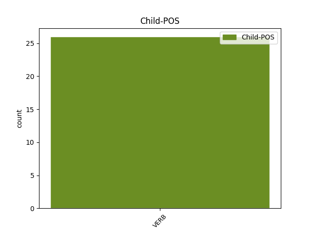

Distribution of features within this leaf

Agreement Rules sorted by frequency.
- When the dependent token is the conjunct(conj) of the head token, and the head token is AUX and the dependent token is AUX.
1 On _ _ _ _ 0 _ _ _
2 a avoir AUX VA Mood=Ind|Number=Sing|Person=3|Tense=Pres|VerbForm=Fin 0 _ _ _
3 rendu _ _ _ _ 0 _ _ _
4 les _ _ _ _ 0 _ _ _
5 gens _ _ _ _ 0 _ _ _
6 malheureux _ _ _ _ 0 _ _ _
7 , _ _ _ _ 0 _ _ _
8 et _ _ _ _ 0 _ _ _
9 on _ _ _ _ 0 _ _ _
10 leur _ _ _ _ 0 _ _ _
11 a avoir AUX VA Mood=Ind|Number=Sing|Person=3|Tense=Pres|VerbForm=Fin 2 conj _ _
12 donné _ _ _ _ 0 _ _ _
13 une _ _ _ _ 0 _ _ _
14 mauvaise _ _ _ _ 0 _ _ _
15 santé _ _ _ _ 0 _ _ _
16 . _ _ _ _ 0 _ _ _
Disagree Examples:
1 C' _ _ _ _ 0 _ _ _
2 était être AUX V Mood=Ind|Number=Sing|Person=3|Tense=Imp|VerbForm=Fin 0 _ _ _
3 pour _ _ _ _ 0 _ _ _
4 nous _ _ _ _ 0 _ _ _
5 , _ _ _ _ 0 _ _ _
6 nouveaux _ _ _ _ 0 _ _ _
7 députés _ _ _ _ 0 _ _ _
8 , _ _ _ _ 0 _ _ _
9 la _ _ _ _ 0 _ _ _
10 première _ _ _ _ 0 _ _ _
11 fois _ _ _ _ 0 _ _ _
12 , _ _ _ _ 0 _ _ _
13 et _ _ _ _ 0 _ _ _
14 c' _ _ _ _ 0 _ _ _
15 est être AUX V Mood=Ind|Number=Sing|Person=3|Tense=Pres|VerbForm=Fin 2 conj _ _
16 un _ _ _ _ 0 _ _ _
17 processus _ _ _ _ 0 _ _ _
18 extrêmement _ _ _ _ 0 _ _ _
19 intéressant _ _ _ _ 0 _ _ _
20 . _ _ _ _ 0 _ _ _
1 Je _ _ _ _ 0 _ _ _
2 suis _ _ _ _ 0 _ _ _
3 d' _ _ _ _ 0 _ _ _
4 accord _ _ _ _ 0 _ _ _
5 sur _ _ _ _ 0 _ _ _
6 le _ _ _ _ 0 _ _ _
7 fait _ _ _ _ 0 _ _ _
8 que _ _ _ _ 0 _ _ _
9 le _ _ _ _ 0 _ _ _
10 Parlement _ _ _ _ 0 _ _ _
11 européen _ _ _ _ 0 _ _ _
12 n' _ _ _ _ 0 _ _ _
13 a _ _ _ _ 0 _ _ _
14 pas _ _ _ _ 0 _ _ _
15 eu _ _ _ _ 0 _ _ _
16 l' _ _ _ _ 0 _ _ _
17 occasion _ _ _ _ 0 _ _ _
18 — _ _ _ _ 0 _ _ _
19 ou _ _ _ _ 0 _ _ _
20 ne _ _ _ _ 0 _ _ _
21 se _ _ _ _ 0 _ _ _
22 l' _ _ _ _ 0 _ _ _
23 est être AUX VA Mood=Ind|Number=Sing|Person=3|Tense=Pres|VerbForm=Fin 0 _ _ _
24 pas _ _ _ _ 0 _ _ _
25 donnée _ _ _ _ 0 _ _ _
26 , _ _ _ _ 0 _ _ _
27 car _ _ _ _ 0 _ _ _
28 c' _ _ _ _ 0 _ _ _
29 était être AUX V Mood=Ind|Number=Sing|Person=3|Tense=Imp|VerbForm=Fin 23 conj _ _
30 la _ _ _ _ 0 _ _ _
31 fin _ _ _ _ 0 _ _ _
32 de _ _ _ _ 0 _ _ _
33 la _ _ _ _ 0 _ _ _
34 législature _ _ _ _ 0 _ _ _
35 — _ _ _ _ 0 _ _ _
36 de _ _ _ _ 0 _ _ _
37 parler _ _ _ _ 0 _ _ _
38 de _ _ _ _ 0 _ _ _
39 les _ _ _ _ 0 _ _ _
40 orientations _ _ _ _ 0 _ _ _
41 . _ _ _ _ 0 _ _ _
1 Ainsi _ _ _ _ 0 _ _ _
2 , _ _ _ _ 0 _ _ _
3 le _ _ _ _ 0 _ _ _
4 premier _ _ _ _ 0 _ _ _
5 projet _ _ _ _ 0 _ _ _
6 relevant _ _ _ _ 0 _ _ _
7 de _ _ _ _ 0 _ _ _
8 le _ _ _ _ 0 _ _ _
9 programme _ _ _ _ 0 _ _ _
10 Pericles _ _ _ _ 0 _ _ _
11 n' _ _ _ _ 0 _ _ _
12 a avoir AUX VA Mood=Ind|Number=Sing|Person=3|Tense=Pres|VerbForm=Fin 0 _ _ _
13 été _ _ _ _ 0 _ _ _
14 réalisé _ _ _ _ 0 _ _ _
15 qu' _ _ _ _ 0 _ _ _
16 en _ _ _ _ 0 _ _ _
17 octobre _ _ _ _ 0 _ _ _
18 2002 _ _ _ _ 0 _ _ _
19 et _ _ _ _ 0 _ _ _
20 le _ _ _ _ 0 _ _ _
21 montant _ _ _ _ 0 _ _ _
22 engagé _ _ _ _ 0 _ _ _
23 en _ _ _ _ 0 _ _ _
24 2002 _ _ _ _ 0 _ _ _
25 était être AUX V Mood=Ind|Number=Sing|Person=3|Tense=Imp|VerbForm=Fin 12 conj _ _
26 légèrement _ _ _ _ 0 _ _ _
27 inférieur _ _ _ _ 0 _ _ _
28 à _ _ _ _ 0 _ _ _
29 40 _ _ _ _ 0 _ _ _
30 % _ _ _ _ 0 _ _ _
31 de _ _ _ _ 0 _ _ _
32 la _ _ _ _ 0 _ _ _
33 dotation _ _ _ _ 0 _ _ _
34 budgétaire _ _ _ _ 0 _ _ _
35 initiale _ _ _ _ 0 _ _ _
36 ( _ _ _ _ 0 _ _ _
37 celle-ci _ _ _ _ 0 _ _ _
38 avait _ _ _ _ 0 _ _ _
39 été _ _ _ _ 0 _ _ _
40 revue _ _ _ _ 0 _ _ _
41 à _ _ _ _ 0 _ _ _
42 la _ _ _ _ 0 _ _ _
43 baisse _ _ _ _ 0 _ _ _
44 en _ _ _ _ 0 _ _ _
45 cours _ _ _ _ 0 _ _ _
46 d' _ _ _ _ 0 _ _ _
47 exercice _ _ _ _ 0 _ _ _
48 ) _ _ _ _ 0 _ _ _
49 . _ _ _ _ 0 _ _ _